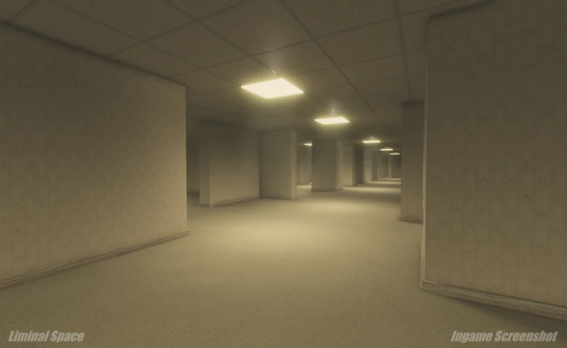
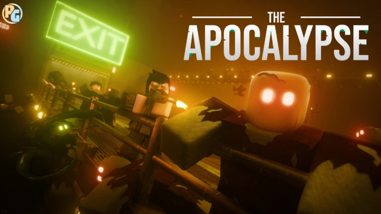
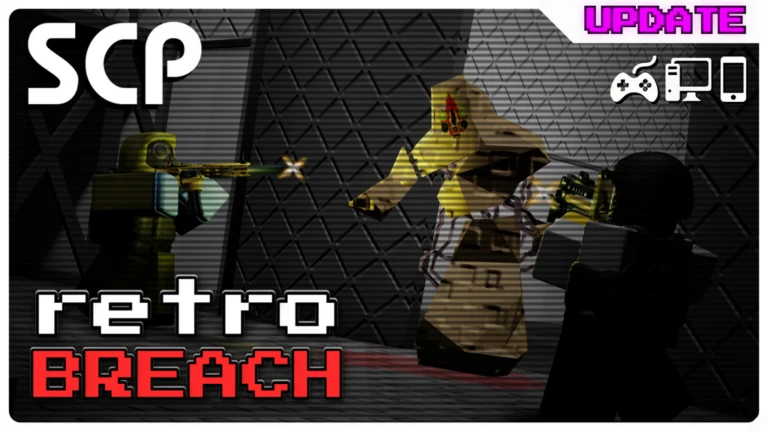
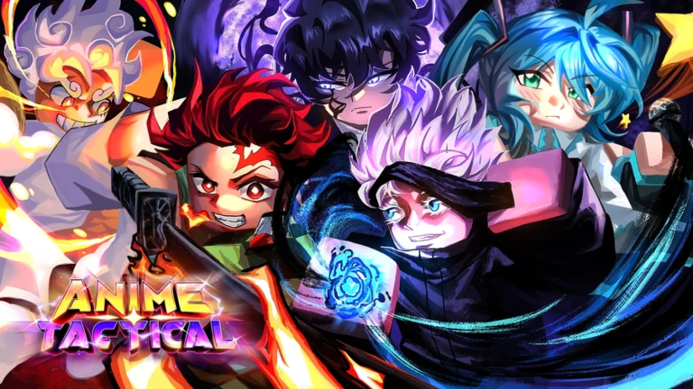
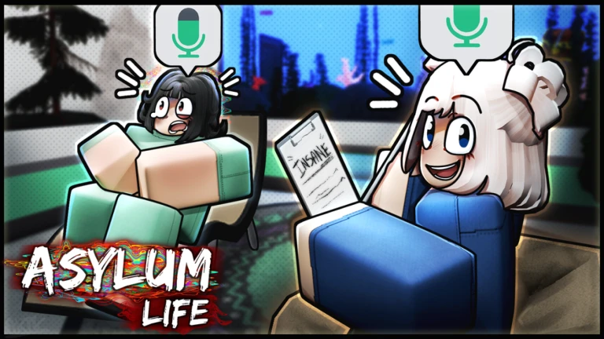
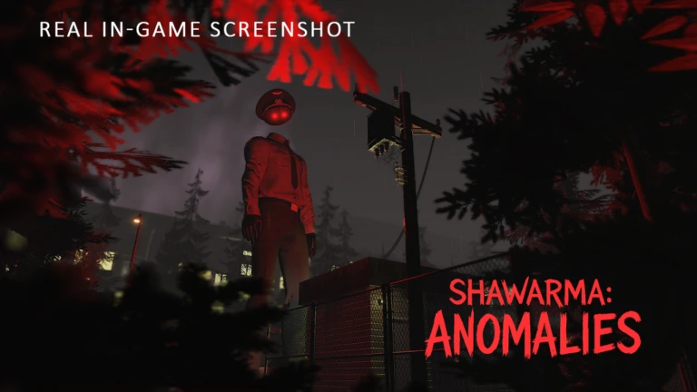

Cybersecurity
Изучаю Linux, networking, Blue Team, SOC и DFIR fundamentals.
Открыт к сотрудничеству
SECURITY · QA · ROBLOX DEVELOPMENT
Изучаю кибербезопасность, разрабатываю системы для Roblox и тестирую игровые проекты. Интересуюсь SOC, DFIR, Blue Team, безопасностью игр и качеством пользовательского опыта.
Учусь и развиваюсь на пересечении кибербезопасности, QA и Roblox-разработки, применяя знания в практических проектах.
Изучаю Linux, networking, Blue Team, SOC и DFIR fundamentals.
Тестирую gameplay, UI/UX, progression, balancing и cross-device experience; составляю подробные bug reports.
Разрабатываю игровые системы, UI, серверную логику и прототипы на Luau с использованием Roblox Studio и Rojo.
Python · C · Luau · Linux · Networking · Docker · Reverse Engineering fundamentals
QA Lead
Руководил QA-командой One Shot, распределял задачи и координировал проверку новых механик и контента. Вместе с разработчиками контролировал качество обновлений, приоритет критичных проблем и повторное тестирование исправлений перед выпуском.
QA Manager
Руковожу QA-командой из 200+ тестеров, координирую проверку обновлений и распределяю приоритетные задачи. Поддерживаю связь с разработчиками, чтобы найденные проблемы были понятно описаны, исправлены и повторно проверены.
Lead Tester
Координирую тестирование Soul Arena и проверяю ключевые игровые сценарии перед обновлениями. Помогаю воспроизводить дефекты, уточнять bug reports и контролировать повторное тестирование исправлений.

QA Lead
Руководил QA-командой Liminal Space и координировал проверку новых механик, контента и обновлений. Вместе с разработчиками определял приоритет проблем и контролировал качество исправлений перед их выпуском.
QA Tester
Проводил ручное тестирование оружия, раундов и баланса BloxStrike, проверяя стабильность соревновательного процесса. Воспроизводил найденные баги, оформлял понятные bug reports и выполнял regression testing после исправлений.
QA Tester
Вручную тестировал передвижение, parkour-механики, карты и UI/UX в разных игровых сценариях. Находил и воспроизводил проблемы взаимодействия, документировал их в bug reports и повторно проверял исправления.

QA Tester
Вручную проверял основной gameplay и нестандартные действия игрока в The Apocalypse. Воспроизводил ошибки, составлял bug reports с чёткими шагами и проводил regression testing исправленных сценариев.
QA Tester
Тестировал ключевые игровые сценарии ROB IT и реакцию систем на пограничные случаи. Стабильно воспроизводил дефекты, описывал ожидаемый и фактический результат в bug reports и проверял исправления повторно.

QA Tester
Проводил ручные проверки игровых механик и интерфейсов SCP retroBreach после обновлений. Выявлял и воспроизводил баги, подробно фиксировал условия их появления и отслеживал регрессии после исправлений.

QA Tester
Вручную проверял игровой прогресс, взаимодействие механик и понятность интерфейсов Anime Tactical Simulator. Воспроизводил несоответствия, оформлял bug reports с нужным контекстом и проводил regression testing обновлений.

QA Tester
Вручную тестировал игровые ситуации, взаимодействия и UI/UX Asylum Life. Воспроизводил ошибки в контролируемых условиях, составлял структурированные bug reports и подтверждал исправления с помощью regression testing.

QA Tester
Вручную проверял последовательности игровых событий и интерфейсы Scary Shawarma Kiosk. Находил воспроизводимые дефекты, фиксировал шаги в bug reports и повторно проходил затронутые сценарии после исправлений.
Community Affairs
Работа с сообществом Asylum Life и поддержка порядка вокруг игрового проекта. Помогаю с коммуникацией, обратной связью игроков и аккуратным сопровождением community-процессов.
Moderator
Модерация сообщества Hypershot и помощь в поддержании безопасной, понятной среды для игроков. Следил за порядком в коммуникации и помогал команде с community-related задачами.
QA Tester, Support Specialist
Публичных игр: —
Сейчас играют: —
Всего визитов: —
Статистика временно недоступна
QA Tester
Публичных игр: —
Сейчас играют: —
Всего визитов: —
Статистика временно недоступна
Статистика загружается...
Изучаю cybersecurity, Linux и networking, развиваюсь в направлениях SOC, DFIR и Blue Team.
Тестирую Roblox-игры, игровые механики, интерфейсы, progression, баланс и player experience.
Создаю собственные игровые системы, инструменты и прототипы в Roblox Studio с использованием Luau и Rojo.
Работаю над Roblox Asylum Life Wiki и community-документацией, структурируя информацию для игроков и участников проекта.
Создаю NSAP Creator Manager — внутренний web-инструмент для управления авторами, обработки и проверки контента.